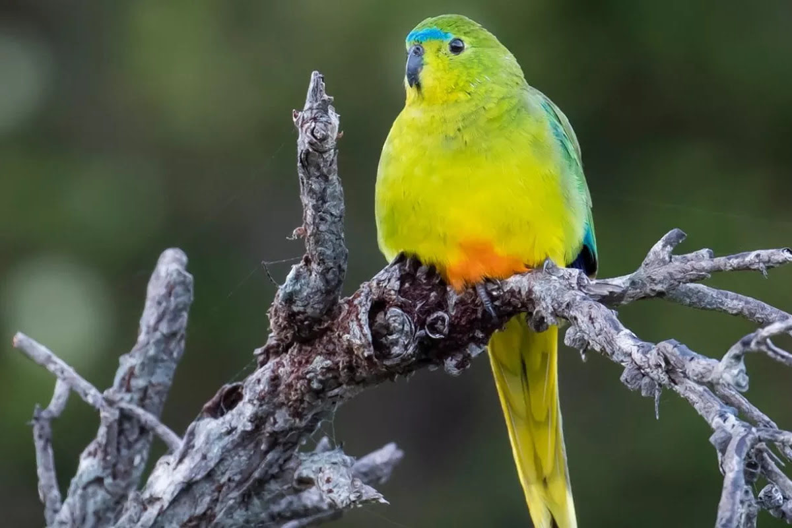

Orange-bellied Parrot Neophema chrysogaster The Orange-bellied Parrot is one of Australia's most endangered birds. These small, brightly colored parrots are known for their vivid green plumage, orange belly, and distinctive blue frontal band. They migrate between Tasmania and mainland Australia.

Habitat
Orange-bellied Parrots breed in the coastal southwest of Tasmania and migrate to the coastal regions of Victoria and South Australia for the winter. Their habitats include coastal heathlands, saltmarshes, and moorlands, where they find food and shelter.
Diet
The diet of Orange-bellied Parrots mainly consists of seeds, fruits, and flowers of various salt-tolerant plants. They feed on species such as the Beaded Glasswort and Shrubby Glasswort, which are found in their coastal habitats.
Conservation Status
Orange-bellied Parrots are critically endangered, with only a small population remaining. Major threats include habitat loss, predation, and environmental changes. Conservation efforts focus on habitat restoration, captive breeding programs, and monitoring of wild populations.
How to Help
You can help protect Orange-bellied Parrots by supporting conservation organizations, participating in habitat restoration projects, and raising awareness about their endangered status. Donations to wildlife conservation groups and volunteering your time to help with local conservation efforts can make a significant difference.
"Saving Australia's Endangered, Together for a Wilder Future"